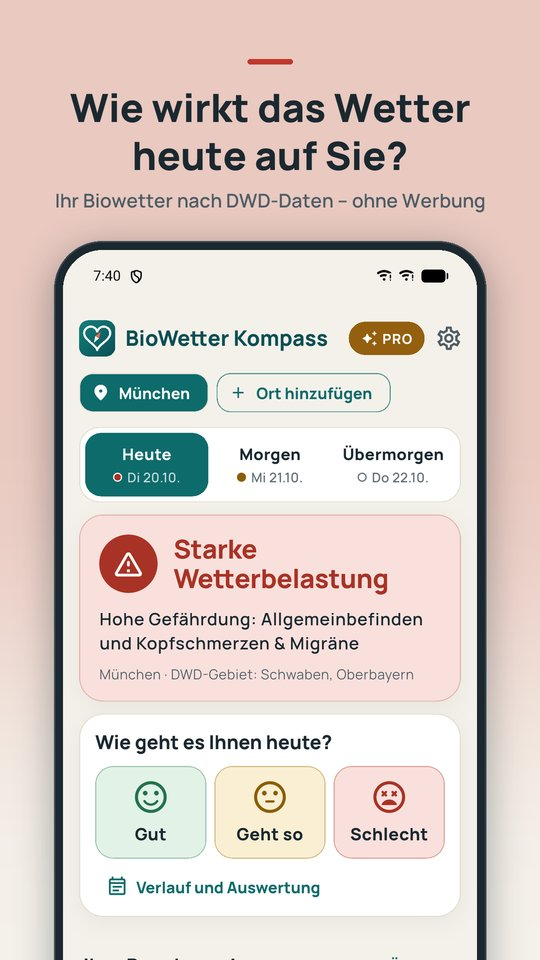
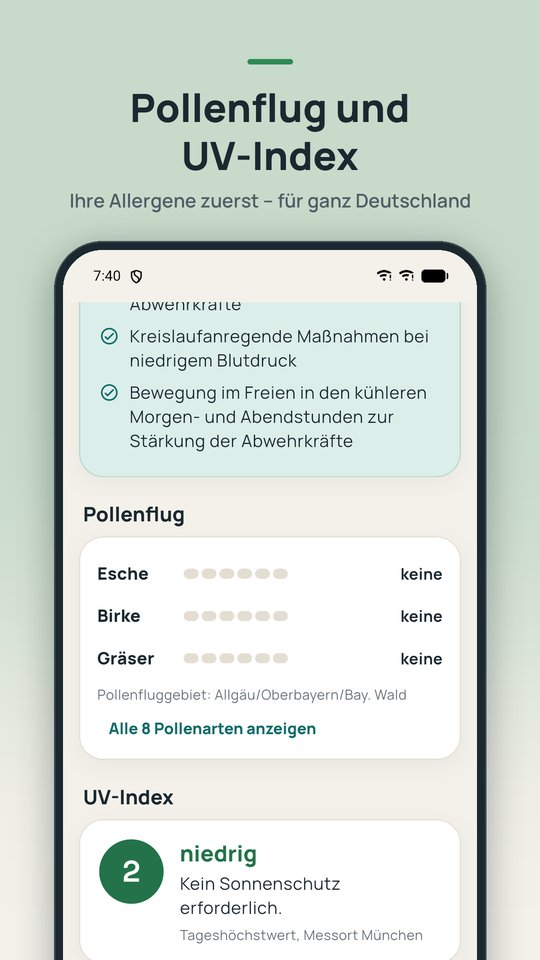

BioWetter Kompass · App für Android
Biowetter für Wetterfühlige
Wie wirkt das Wetter heute auf Sie? BioWetter Kompass zeigt das Biowetter für heute, morgen und übermorgen – passend zu Ihren Beschwerden, für ganz Deutschland per Postleitzahl. Dazu Pollenflug, UV-Index und Waldbrandgefahr. Große Schrift, klare Worte, ohne Werbung.
Bald bei Google Play
- Heute, morgen, übermorgen
- 11 Beschwerden
- Pollenflug & UV-Index
- Ohne Standortfreigabe
- Ohne Werbung
Unabhängiges Angebot: BioWetter Kompass ist nicht mit dem Deutschen Wetterdienst verbunden. Quelle der Daten: Deutscher Wetterdienst, opendata.dwd.de (Lizenz CC BY 4.0).
BioWetter Kompass ist kein Medizinprodukt und dient nicht der Diagnose oder Behandlung.
Was ist das Biowetter?
Viele Menschen spüren das Wetter: Kopfschmerzen beim Wetterumschwung, Kreislaufprobleme bei Föhn oder Schwüle, schmerzende Gelenke, wenn es kalt und feucht wird. Diese Wetterfühligkeit ist weit verbreitet.
Der Deutsche Wetterdienst veröffentlicht dafür jeden Tag Gefahrenindizes für Wetterfühlige, das sogenannte Biowetter oder Gesundheitswetter: für 11 Gebiete in Deutschland, für Vormittag und Nachmittag, je Beschwerde mit den Stufen „kein Einfluss“, „geringe“ oder „hohe Gefährdung“. Dazu kommen Wärmebelastung und Kältereiz.
BioWetter Kompass ordnet Ihre Postleitzahl dem richtigen Gebiet zu, zeigt nur die Beschwerden, die Sie betreffen, und fasst den Tag in einer klaren Antwort zusammen: „Kaum Wettereinfluss“, „Leichte“ oder „Starke Wetterbelastung“.


Für wen ist BioWetter Kompass?
Für alle, die wetterfühlig sind oder auf Pollen reagieren. Sie wählen aus 11 Beschwerden:
- Allgemeinbefinden, Kopfschmerzen & Migräne, Schlaf, Stimmung, Konzentration, Schmerzempfinden
- Niedriger Blutdruck, Herz & Bluthochdruck
- Rheuma, Gelenke & Arthrose
- Asthma & Atemwege
Bei Pollenallergie und Heuschnupfen wählen Sie Ihre Allergene: Hasel, Erle, Esche, Birke, Gräser, Roggen, Beifuß und Ambrosia. Die App ist bewusst ruhig gestaltet, mit großer Schrift und ohne Ablenkung.
Kostenlos und ohne Werbung
- Biowetter für heute, morgen und übermorgen, für Vormittag und Nachmittag
- Die Empfehlungen des DWD und alle Angaben im Detail, genau wie veröffentlicht
- Pollenflug-Gefahrenindex für Ihr Gebiet, Ihre Allergene zuerst
- UV-Index mit Hinweisen zum Sonnenschutz
- Waldbrandgefahr der nächstgelegenen DWD-Station (in der Saison)
- Auf Wunsch jeden Morgen ein kurzer Überblick als Benachrichtigung: Ihr Biowetter und Ihre Pollen für den Heimatort
- Tagebuch: mit einem Tippen notieren, wie es Ihnen geht, samt Verlauf der letzten 30 Tage – nur auf Ihrem Gerät
- Quelle und Stand immer sichtbar; fehlende oder veraltete Daten werden als solche angezeigt
BioWetter Kompass Pro – einmalig 3,99 €, kein Abo
- Widget für den Startbildschirm: Biowetter, Pollen und UV-Index, ohne die App zu öffnen
- Warnung am Morgen bei hoher Gefährdung für Ihre Beschwerden (auf Wunsch schon bei geringer), bei Pollenflug ab der von Ihnen gewählten Stufe und auf Wunsch bei UV-Index ab 6
- Bis zu 6 Orte, zum Beispiel Wohnort, Arbeitsort und Urlaubsort
- Luftdruck und Luftfeuchte der letzten 24 Stunden von der nächstgelegenen DWD-Station, dazu die Luftdruck-Prognose des DWD für die nächsten 24 Stunden
- Tagebuch-Auswertung: wie es Ihnen an Tagen mit hoher Gefährdung oder fallendem Luftdruck ging, einfach gezählt aus Ihren Einträgen – kein medizinischer Befund
Pro können Sie 7 Tage kostenlos testen, ohne Anmeldung und ohne Zahlungsdaten. Der Test endet von selbst. Preis in Deutschland, über Google Play.
Ihre Daten bleiben auf Ihrem Gerät
Kein Konto, kein Tracking, keine Werbung und kein Standortzugriff. Ihre Orte, Beschwerden und Allergene werden nur auf Ihrem Gerät gespeichert. Die App lädt ausschließlich öffentliche Dateien vom Datenserver des DWD. Details in der Datenschutzerklärung.
Häufige Fragen
Was bedeutet „geringe“ oder „hohe Gefährdung“?
Das ist die Einstufung des Deutschen Wetterdienstes: Sie beschreibt, wie stark das Wetter auf eine bestimmte Beschwerde einwirken kann – kein Einfluss, geringe oder hohe Gefährdung. Sie sagt nicht voraus, wie es Ihnen persönlich geht.
Woher stammen die Daten und wann werden sie aktualisiert?
Alle Wetter- und Gesundheitsdaten stammen vom Deutschen Wetterdienst und werden direkt von dessen offenem Datenserver opendata.dwd.de geladen. Biowetter und Pollenflug erscheinen täglich gegen 11 Uhr. Quelle und Stand stehen in der App immer dabei.
Brauche ich eine Standortfreigabe oder ein Konto?
Nein. Sie geben einmal Ihre Postleitzahl oder Ihren Ort ein; die Suche läuft auf Ihrem Gerät. Es gibt kein Konto und keine Anmeldung.
Ist die App kostenlos? Gibt es Werbung oder ein Abo?
Biowetter, Pollenflug, UV-Index, Waldbrandgefahr, das Tagebuch und der tägliche Überblick am Morgen sind kostenlos und ohne Werbung. BioWetter Kompass Pro mit Widget, Warnung am Morgen, bis zu 6 Orten und Luftdruck-Verlauf kostet in Deutschland einmalig 3,99 € – kein Abo. Pro können Sie 7 Tage kostenlos testen, ohne Zahlungsdaten.
Ist BioWetter Kompass eine App des Deutschen Wetterdienstes?
Nein. BioWetter Kompass ist ein unabhängiges Angebot von Sillapps und nicht mit dem Deutschen Wetterdienst verbunden. Die App nutzt die frei verfügbaren Daten des DWD (Lizenz CC BY 4.0) und bereitet sie für Ihre Beschwerden auf.
Ersetzt die App einen Arztbesuch?
Nein. BioWetter Kompass ist kein Medizinprodukt und dient nicht der Diagnose oder Behandlung. Bei Beschwerden wenden Sie sich an Ihre Ärztin oder Ihren Arzt.